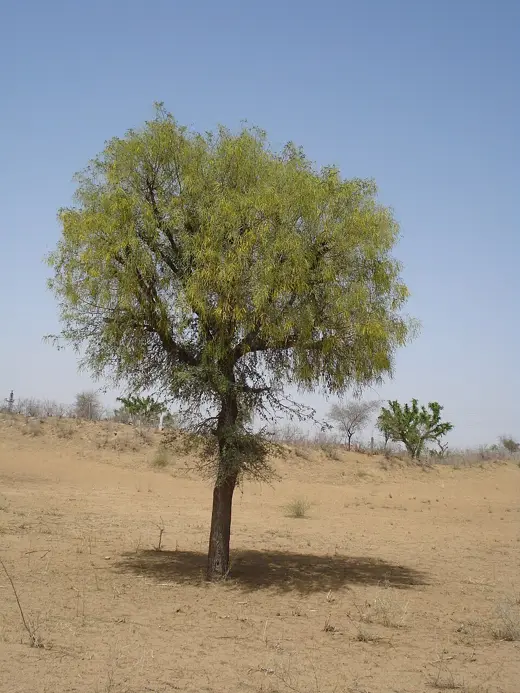

Sauces, preserves & sides · Popular in Desert, dunes and gravel plains
Ghaf leaf salad
Ghaf leaf salad is made with wild ghaf leaves and pods, a favourite in Desert, dunes and gravel plains.

How do you make ghaf leaf salad?
Finely minced young ghaf leaves mixed with fish and rice.
Wild ingredients
- Ghaf leaves and pods (Prosopis cineraria): in season March to June